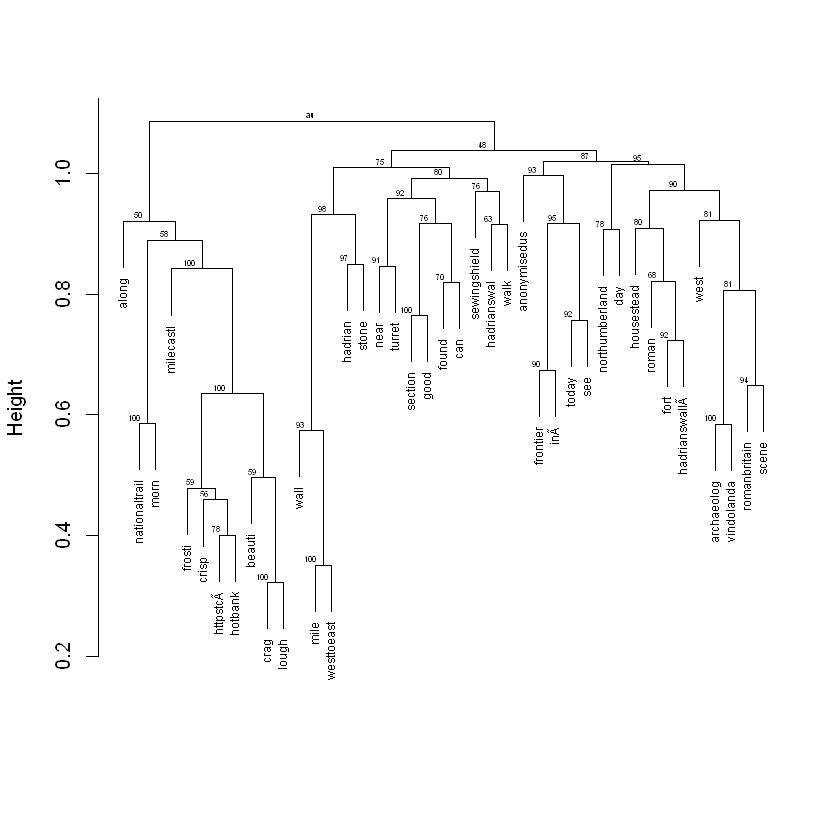

Stirling R for Heritage Training Workshop

tutorials for R training
View the Project on GitHub IARHeritages/R_FOR_HERITAGE_TRAINING_WORKSHOP
R FOR HERITAGE: TRAINING WORKSHOP
15 May 2019, University of Stirling
Sponsored by the Scottish Graduate School for Arts and Humanities
Authors: Marta Krzyzanska (marta.krzyzanska@stir.ac.uk) and Dr Chiara Bonacchi (chiara.bonacchi@stir.ac.uk)
Part 4: Data analysis - bonus exercise
In the previous tutorials, you have learnt some fundamental skills and routines to explore and analyse social media data using R. This is an optional tutorial that aims to introduce a more advanced method that can be useful in text analysis: cluster analysis.
Cluster analysis
Cluster analysis can be used to get a better idea of the distance that there is between different terms contained in a corpus of texts. This kind of analysis can give us more nuanced information about the extent to which certain terms appear in proximity or not.
Cluster analysis involves the calculation of the distances between all the tokens (terms) in the dtm. Drawing on the calculation of these distances, hierarchical clustering methods can be used to classify the tokens into nested groups, which can then be visualised as a dendrogram.
To carry out a cluster analysis, set your working directory, install and load the required libraries, and load the dtm you saved previously, into the workspace:
setwd("/Users/yourusername/Documents/Rheritage")
library(tm)
install.packages("pvclust")
library(pvclust)
load("dtm.R") # Load the dtm
Now, inspect the dtm to remind yourself of how it is structured:
inspect(dtm)
<<TermDocumentMatrix (terms: 4167, documents: 4651)>>
Non-/sparse entries: 50493/19330224
Sparsity : 100%
Maximal term length: 27
Weighting : term frequency (tf)
Sample :
Docs
Terms 1217 1221 143 150 156 162 177 178 179 78
along 0 0 0 0 0 0 0 0 0 0
anonymisedus 0 1 0 1 0 0 1 0 0 1
archaeolog 0 0 0 0 0 0 0 0 0 0
crag 0 0 0 0 0 0 0 0 0 0
hadrianswal 1 1 1 1 1 1 1 1 1 1
morn 0 0 0 0 0 0 0 0 0 0
nationaltrail 0 0 0 0 0 0 0 0 0 0
northumberland 1 0 0 1 0 1 0 1 0 0
roman 0 0 0 0 0 0 0 0 0 1
wall 0 0 0 0 0 0 0 0 0 1
As you can see, there are 4167 terms across 4651 documents, with a very high percentage of sparse terms. Sparsity refers to the distribution of terms across the corpus of documents, and more specifically to the proportion of the documents in which each the term does not appear at all (i.e. the value in the dtm = 0), which in this case is rounded up to 100%. If a given term appears only in one document, or in very few documents in the corpus, it is a sparse term. Removing sparse terms gets rid of the noise created by the terms that occur only incidentally. It also makes the clusters easier to visualise and analyse, by reducing the number of terms that are displayed on the dendrogram. Therefore, before starting to run the cluster analysis, we need to remove sparse terms.
To do that, we will use the removeSparseTerms() function from the tm library. This function takes only two arguments: the dtm from which to remove the sparse terms and the maximum allowed sparsity from the range between 0 to 1 (but excluding 0 and 1):
dtm.sp <- removeSparseTerms(dtm, sparse=0.97)
# This removes from the dtm all the terms that have sparsity > 0.97
# It means that only the terms that are absent from less than 97% of the documents are kept
# In other words, it means that we are keeping the terms that appear in at least 3% of the documents in the corpus
Now inspect the dtm, without the sparse terms:
dtm.sp
<<TermDocumentMatrix (terms: 41, documents: 4651)>>
Non-/sparse entries: 20090/170601
Sparsity : 89%
Maximal term length: 14
Weighting : term frequency (tf)
The maximum sparsity level allowed is arbitrary and can be changed according to the requirements of the analysis. In this case, we chose to set the maximum level of sparsity so that there are less than 50 terms left in the matrix.
We can now start with the analysis. Firstly, we need to transform our data into a format that can be used as an input in the cluster analysis. To do this, scale and transpose the dtm, using the scale() and t() functions, and inspect the results:
dtm.sp.df.sc.t <- t(scale(dtm.sp))
head(dtm.sp.df.sc.t)
| hadrianswal | northumberland | today | wall | hadrian | walk | fort | roman | nationaltrail | anonymisedus | ... | turret | west | scene | hadrianswall | in | httpstc | hotbank | westtoeast | crisp | frosti | |
|---|---|---|---|---|---|---|---|---|---|---|---|---|---|---|---|---|---|---|---|---|---|
| 1 | 3.0040623 | 3.0040623 | 3.0040623 | 3.0040623 | -0.3247635 | -0.3247635 | -0.3247635 | -0.3247635 | -0.3247635 | -0.3247635 | ... | -0.3247635 | -0.3247635 | -0.3247635 | -0.3247635 | -0.3247635 | -0.3247635 | -0.3247635 | -0.3247635 | -0.3247635 | -0.3247635 |
| 2 | 3.5153554 | 3.5153554 | -0.2775281 | 3.5153554 | -0.2775281 | -0.2775281 | -0.2775281 | -0.2775281 | -0.2775281 | -0.2775281 | ... | -0.2775281 | -0.2775281 | -0.2775281 | -0.2775281 | -0.2775281 | -0.2775281 | -0.2775281 | -0.2775281 | -0.2775281 | -0.2775281 |
| 3 | 2.6503566 | 2.6503566 | -0.3681051 | 2.6503566 | 2.6503566 | 2.6503566 | -0.3681051 | -0.3681051 | -0.3681051 | -0.3681051 | ... | -0.3681051 | -0.3681051 | -0.3681051 | -0.3681051 | -0.3681051 | -0.3681051 | -0.3681051 | -0.3681051 | -0.3681051 | -0.3681051 |
| 4 | 5.0800590 | -0.2605158 | -0.2605158 | -0.2605158 | 2.4097716 | -0.2605158 | 2.4097716 | -0.2605158 | -0.2605158 | -0.2605158 | ... | -0.2605158 | -0.2605158 | -0.2605158 | -0.2605158 | -0.2605158 | -0.2605158 | -0.2605158 | -0.2605158 | -0.2605158 | -0.2605158 |
| 5 | -0.2116563 | -0.2116563 | -0.2116563 | 2.6809803 | -0.2116563 | -0.2116563 | -0.2116563 | 5.5736170 | -0.2116563 | -0.2116563 | ... | -0.2116563 | -0.2116563 | -0.2116563 | -0.2116563 | -0.2116563 | -0.2116563 | -0.2116563 | -0.2116563 | -0.2116563 | -0.2116563 |
| 6 | 2.6503566 | 2.6503566 | -0.3681051 | 2.6503566 | 2.6503566 | 2.6503566 | -0.3681051 | -0.3681051 | -0.3681051 | -0.3681051 | ... | -0.3681051 | -0.3681051 | -0.3681051 | -0.3681051 | -0.3681051 | -0.3681051 | -0.3681051 | -0.3681051 | -0.3681051 | -0.3681051 |
As you can see, the ‘transposition’ simply switched the rows with the columns. ‘Scaling’ centres and rescales the values, based on the mean and the standard deviation of the frequencies of all the terms in the corpus. It’s a simple trick that preserves the proportional differences between the values of the frequency of different terms in each document, but it makes the results easier to compute.
Now we can compute the clusters using the pvclust() function:
fit <- pvclust(dtm.sp.df.sc.t,nboot=50)
# The above computes the clusters of the terms present in the corpus
# The first argument is a matrix with each column storing terms and rows storing individual documents. The values represent relative frequencies
# The nboot argument defines the number of bootstrap replications
# In this case it was set to a relatively low number (50), to enable the completion of the analysis during the tutorial
# Usually it is good practice to set a higher number here (default is 1000)
Bootstrap (r = 0.5)... Done.
Bootstrap (r = 0.6)... Done.
Bootstrap (r = 0.7)... Done.
Bootstrap (r = 0.8)... Done.
Bootstrap (r = 0.9)... Done.
Bootstrap (r = 1.0)... Done.
Bootstrap (r = 1.1)... Done.
Bootstrap (r = 1.2)... Done.
Bootstrap (r = 1.3)... Done.
Bootstrap (r = 1.4)... Done.
The code above uses bootstrapping to estimate the uncertainty of the clusters. Bootstrapping involves generating a number of random samples of documents from the data (in this case 50 samples, as nboot=50), and then replicating the cluster analysis on each of those samples. Then, the probability of each cluster (p-value) is calculated based on the number of times it appears in the bootstrap replicates.
Here it is important to note, while concepts such as bootstrapping may sound complicated at first, you don’t need to understand all the maths behind them in detail. You just need to know what they do and how you can use them in the analysis.
plot(fit, cex = 0.6, cex.pv = 0.4, col.pv=c(1,0,0), main="", xlab="", sub="")
# This plots the hierarchical clusters (fit)
# The cex and cex.pv arguments define the size of the labels (smaller value=smaller size)
# The col.pv argument defines the colours of the p-values of the clusters
# The main argument defines the title of the dendrogram

The small numbers at the top of every cluster indicate the extent to which the clusters are supported by the data, in other words the probability of each cluster based on bootstrapping. The higher the values, the higher certainty that the terms form a cluster.
Save the plot:
dev.print(pdf,file="cluster_analysis.pdf")
** Congratulations you have completed the bonus exercise!**
There is a number of other techniques that can help you explore social media data and which can be implemented in R. These include, for example, social network analysis and topic modelling. While we don’t cover them in this tutorial, there is plenty of documentation about these methods freely available on the internet. The skills learned in this tutorial should make it easier to understand this kind of documentation, and hopefully enable you to explore it on your own.